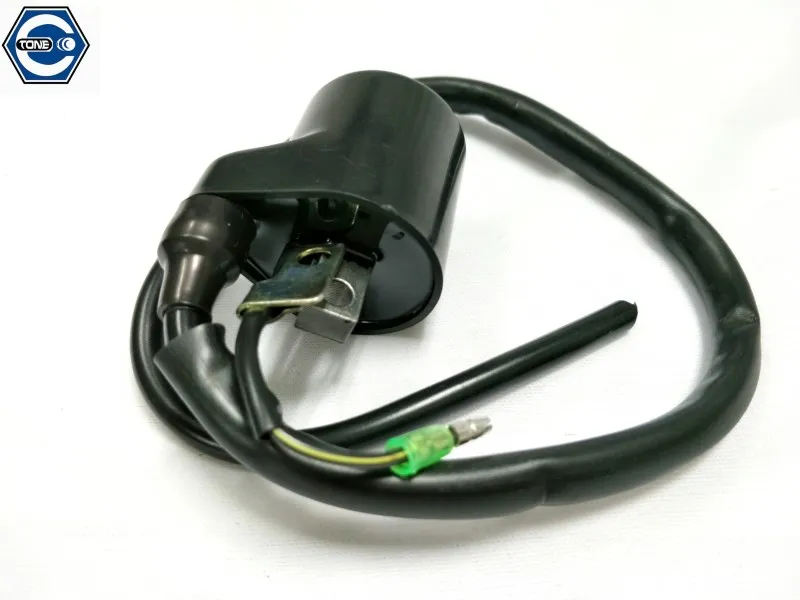

้
ซ่อมเเม่งเลยพื้นฐานการเช็คระบบไฟ
รถสตาทไม่ติดไฟไม่ออกหัวเทียนสิ่งที่ควรทดสอบไล่ตามลำดับ
1. ไขหัวเทียนออกวางกับเสื้อสูบ ระวังคราบน้ำมันเชื้อเพลิงอาจทำให้เกิดไฟลุกได้ เปิดสวิทกุญเเจ กดคันสตาทหรือสวิตสตาทเพื่อเช็คไฟ ตัวอย่างสีไฟหัวเที่ยนที่ดี และข้อมูลหัวเทียน
2. ไฟไม่ออกหัวเทียน ทำการถอดปลั๊กหัวเทียนออก เปิดสวิทกุญเเจ เเละสตาทเพื่อเช็คไฟ กรณีนี้เราจะสามารถเช็คได้ว่าไฟออกจากคอล์ยสตาทไหม
3. กรณีไฟไม่ออกจากคอยหัวเทียน ถอดสายไฟเข้าคอยหัวเทียนเเล้วกดคันสตาทเพื่อเช็คไฟ [ระวังโดนดูดเพราะไฟเป็นacแล้ว] กดคันสตาทพร้อมกับนำสายไฟเขี่ยกับตัวถังเพื่อเช็คว่ามีไฟออกมารอเพื่อเข้าคอยหัวเทียนไหม ถ้าไฟมารอที่สายเข้าหัวคอยหัวเทียน สัณนิฐานได้เลยว่าคอยไฟเสีย ให้ทำการเปลี่ยนคอยหัวเทียนเเละทดสอบดูใหม่ว่าไฟacออกจากคอยหัวเทียนไหม
4. กรณีไฟไม่ออกสายเข้าคอยหัวเทียนให้ไล่เช็คว่าสายเส้นนั้นขาดหรือเป็นสนิมเขียวไหม ยิ่งถ้าอยู่ใกล้ทะเลจะชอบเป็นสนิมเขียวเเละขาดใน
5. ให้ผู้ซ่อมทำการเช็คไฟDCที่ออกจากมัดไฟกรณีไฟ3เฟส[เหลืองสามเส้น] ผู้เขียนจะยกตัวอย่างจากHondaถ้าเป็นยี่ห้ออื่นๆสีจะเพี้ยนไปให้ไล่เช็คดูทีละเส้นว่าเส้นไฟกราวเส้นไหนไฟdcโดยปกติดรถทั่วไฟจะมีสายไฟเพื่อติดเครื่อง1เส้น [สีขาว] พันเชอร์1เส้น[น้ำเงิน หรือขาวน้ำเงิน] กราว1เส้น [เขียว] และไฟหน้า1เส้น [เหลือง] ให้ผู้ซ่อมทำการเช็คสายสีขาว โดยนำมิเตอร์ปรับย่านdc20v เเล้วจิ้มขั้วลบเเบ็ตเตอรี่ [จะวัดไฟให้จิ้มขั้วลบเเบตเตอรี่ จะวัดกราวให้จิ้มขั้วบวกเเบ็ตเตอรี่] ผู้ซ่อมควรเช็คให้มันใจว่าวัดไฟเส้นติดเครื่องไม่ใช่ ไฟหน้า
5.1 กรณีไฟออกให้เราวัดกราว[เส้นสีเขียว]โดยปรับมิเตอร์ไปย่านdcเเล้วจิ้มขั้ว+แบ็ตเตอร์รี่เเละทำการจิ้มที่สายกราว[สีเขียว]เเล้วทำการสตาทเพื่อทดสอบว่ากราวมาหรือขาดไหม กรณีผู้ซ่อมวัดเเล้วไม่มีไฟสตาทเครื่องออกจากมัดให้ผูซ่อมทำการถอดซ่อมหรือเปลี่ยนมัดไฟ
6. ไฟออกจากเส้นสตาท ให้ผู้ซ่อมทำการไล่เช็คเส้นนั้นต่อไปโดยไฟจะวิ่งไปเข้าแผ่นชาจ์ไฟ และออกจากเผ่นชาจไฟ[ถ้าเเบ็ตเตอรี่ปกติไฟจะออกราว12.8v-13.5v] ให้ทำการเช็คแบบเดียวกับมัดไฟในข้อ5-5.1
7. กรณีไฟออกแผ่นชาจ สายที่ออกจากมัด[สีแดง]จะนำไฟไปเลี้ยงเเบ็ตเตอรี่และวิ่งขึ้นไปสวิทกุญแจ ให้ผู้ซ่อมทำการเช็คสวิทกุญเเจว่าเสียหรือมีสายขาดไหม โดยการจั้มสายหรือแล้วแต่วิธีที่ผู้ซ่อมถนัด
8. กรณีไฟวิ่งผ่านสวิทกุญเเจได้ปกติ สวิตกุญเเจไม่เสีย สายไฟที่วิ่งออกมาจากสวิทกุญเเจเวลาบิดสวิทเปิดจะวิ่งกลับมาที่กล่องไฟ ให้ผู่ซ่อมตรวจเช็คว่าสายขาดในหรือเป็นสนิมหรือป่าว
9. กรณีผู้ซ่อมไล่เช็คทั้งหมดที่ผู้เขียนได้กล่าวไว้ทั้งหมดเเล้ว ให้ไล่ดูเส้นที่ออกจากสวิทกุญเเจเวลาเปิดสวิทOn สายเส้นนั้นจะเป็นสายเข้ามาเลี้ยงกล่องไฟเพื่อเเปลงกระเเสไฟจาก VDC เป็น AC เพื่อนำไปจ่ายให้กับคอยหัวเทียนตามข้อ4 ไฟติดเครื่องเส้นที่ออกจากกล่องจะเป็นเส้นเดียวกับที่จ่ายให้คอยหัวเที่ยน กรณีผู้ซ่อมเช็คทุกอย่างปกติไฟเข้ากล่องไฟเเต่ไม่ออกมาเป็นACเพื่อจ่ายคอยหัวเทียน ให้ผูซ่อมสัญณิฐานได้เลยว่ากล่องไฟชำรุด-เสียหายให้ทำการซ่อม-เปลี่ยน